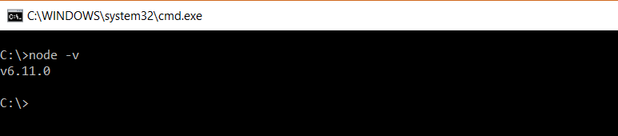
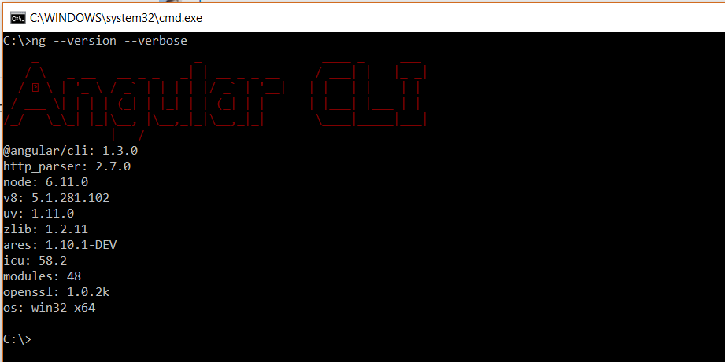

To configure your system to create Angular 4 application you need to install few dependecies as:
1) Node.js : Is an open source server framework;
2) Angular CLI : Command line interface for Angular. Which make our life easier You can install Node using official site : Download Node Download windows version and install it. To confirm just go to command prompt and type as below your get the version of node.

Now to install angual type below command:
> npm install -g @angular/cli
It will take several time to install and configure. Once it is done type below command:
> ng --version --verbose

Adding "--verbose" will give you additional information. if you want basic information only then you can type like
//both are same >ng --version >ng -v
Hope this will help someone!!!